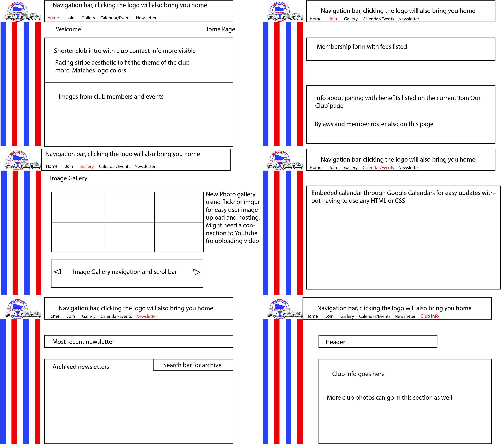

Working with the Minnesota Austin Healy Club (MNAHC) to design a new website for them was a fun and interesting experience. It was the first time I had worked on a project like this in a group, so the collaboration element of this project was also a learning experience. The goal of the project was to design a website for the MNAHC that would be easy to manage and update for someone without a lot of experience with web design. Another large consideration for this project was the audience. Many of the members of the MNAHC are from older generations who may not be as familiar with web forms or may have difficulties reading small text. With these considerations in mind, my group and I began drafting a website.
We began by constructing wireframes in our various media of choice, digital or not. I used Adobe Illustrator to make my wireframe and I was quite satisfied with the result. I modeled a home page, image gallery, newsletter page, membership page, and info page in my wireframe since those were the elements that seemed absolutely necessary in the final product. You can see my wireframe above.
From there we decided on the elements of each other’s wire frames that we liked the most and compiled that into a list of tasks to complete in our final product. None of us had a ton of experience in HTML so we did not want to build a website from the ground up since we felt what we would deliver would not be up to the standard that the MNAHC was looking for. We also wanted to create something a bit more personalized, so prefab website creators like Wix or Weebly were also off the table. In the end, we decided to make a website prototype using a drafting program called Figma. Figma allowed us to design pages in a manner similar to Illustrator while also allowing us to link pages together into a working prototype of the website. It also has the capability to let multiple people work on the same document simultaneously much like Google Docs, which greatly increased our productivity. An added benefit of Figma was also that is had a CSS output for what we created so the CSS from our prototype could be applied to a working model.
Working as a group in Figma was a great learning experience. Effectively dividing up tasks is much more difficult than it seems. I did a lot of work with the visual elements of the prototype since I could use Photoshop and Illustrator. For example, we wanted to edit the MNAHC logo to have no color or text so we could use it as a header, so I took their logo and edited to fit our needs. Another task that was interesting as a group was deciding on what content was most important for each page. We took a long time to figure out what information on their existing website we could keep or shorten and what could be just completely omitted. Overall, I was quite happy with the result of our prototype. You can check out our prototype in the embedded section below.